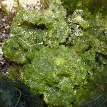
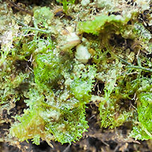
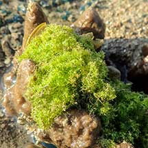
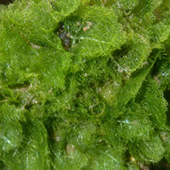
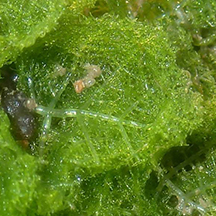
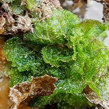
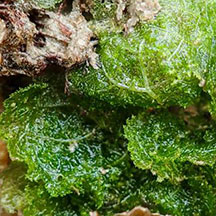
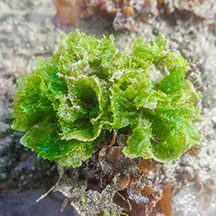
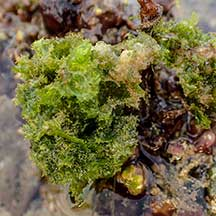

Fuzzy
green seaweed
Boodlea sp.*
Family Boodleaceae
updated
Jul 2020
Where
seen? This small patch of fuzzy green seaweeds is sometimes seen on our
Southern shores growing near reefs.
Features: Small clumps, made up
of fine, short filaments that branch in all directions. They form a spongy mass that is slightly crunchy to the touch. Bright green.
According to AlgaeBase,
there are about 6 current Boodlea species.
|

Cyrene Reef,
Mar 07
|
|
|
*Species are difficult to positively identify
without close examination of internal parts.
On this website, they are grouped by external features for convenience of
display.
| Fuzzy
green seaweeds on Singapore shore |
| Other sightings on Singapore shores |

Big Sisters Island, Feb 24
Photo shared by Vincent Choo on facebook. |

Pulau Hantu, Apr 21
Photo shared by Vincent Choo on facebook. |
|

Pulau Semakau East, Jul 15
Photo shared by Toh Chay Hoon on facebook.
|

Terumbu Semakau, Jul 20
Photo shared by Vincent Choo on facebook.
|
|

Terumbu Pempang Laut, Jul 20
Photo shared by Vincent Choo on facebook. |

Pulau Salu, Apr 21
Photo shared by Vincent Choo on facebook. |
|
Boodlea
species recorded for Singapore
Pham, M. N.,
H. T. W. Tan, S. Mitrovic & H. H. T. Yeo, 2011. A Checklist of
the Algae of Singapore.
| |
Boodlea
composita
Boodlea montagnei |
|
Links
References
- Lee Ai Chin, Iris U. Baula, Lilibeth N. Miranda and Sin Tsai Min ; editors: Sin Tsai Min and Wang Luan Keng, A photographic guide to the marine algae of Singapore, 2015. Tropical Marine Science Institute, 201 pp.
- Pham, M.
N., H. T. W. Tan, S. Mitrovic & H. H. T. Yeo, 2011. A
Checklist of the Algae of Singapore, 2nd Edition. Lee Kong Chian Natural History Museum, National University of Singapore,
Singapore. 99 pp. Uploaded 1 October 2011. [PDF, 1.58 MB].
- Huisman,
John M. 2000. Marine
Plants of Australia University of Western Australia Press. 300pp.
- Calumpong,
H. P. & Menez, E. G., 1997.Field
Guide to the Common Mangroves, Seagrasses and Algae of the Philippines.
Bookmark, Inc., the Philippines. 197 pp.
- Trono, Gavino.
C. Jr., 1997. Field
Guide and Atlas of the Seaweed Resources of the Philippines..
Bookmark, Inc., the Philippines. 306 pp.
|
|
|